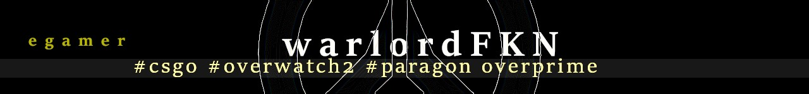

About E-Gamers Headquaters
This site is designed to boost the knowledge of people new to the gaming
world, and for everyday gamer who wants to know what kind of setup
the professional gamers use these days, and why that setup is best.
We also have a products page with the exact products our very own "warlordFKN"
the egaming, l33t - 1B tapping machine.
Do yourself a favour, read his advice and follow your path to WCG also, using the right hardware to give you upperhand! Check products page, and when
your ready.. head right over to the checkout and fill in your details while stocks
last!